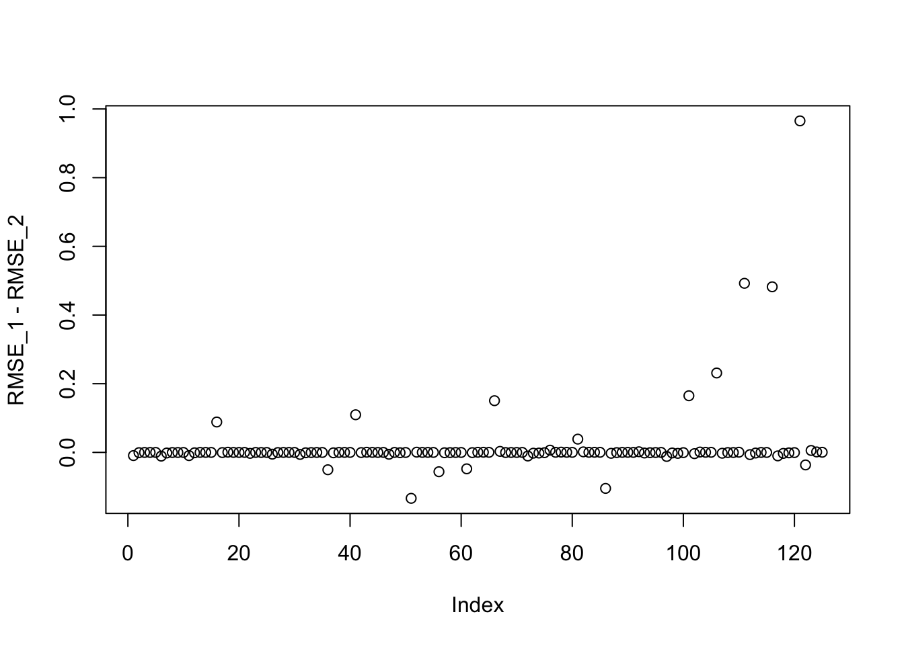

Last updated: 2017-09-16
Code version: 9d8844f
sim_hd = function(N, P, SF, SL, signal, a = rchisq(N,3),b = rchisq(P,1),mu = 0){
E = matrix(rep(0,N*P),nrow=N)
sig2_true = matrix(rep(0,N*P),nrow=N)
for(i in 1:N){
for(j in 1:P){
sig2_true[i,j] = mu + a[i] * b[j]
E[i,j] = rnorm(1,0,sqrt(mu + a[i] * b[j]))
}
}
K=1
lstart = rnorm(N, 0, signal)
fstart = rnorm(P, 0, signal)
index = sample(seq(1:N),(N*SL))
lstart[index] = 0
index = sample(seq(1:P),(P*SF))
fstart[index] = 0
Y = lstart %*% t(fstart) + E
return(list(Y = Y, L_true = lstart, F_true = fstart, Error = E,sig2_true = sig2_true))
}
sim_K = function(K, N, P, SF, SL, signal,noise){
E = matrix(rnorm(N*P,0,noise),nrow=N)
Y = E
L_true = array(0, dim = c(N,K))
F_true = array(0, dim = c(P,K))
for(k in 1:K){
lstart = rnorm(N, 0, signal)
fstart = rnorm(P, 0, signal)
index = sample(seq(1:N),(N*SL))
lstart[index] = 0
index = sample(seq(1:P),(P*SF))
fstart[index] = 0
L_true[,k] = lstart
F_true[,k] = fstart
Y = Y + lstart %*% t(fstart)
}
return(list(Y = Y, L_true = L_true, F_true = F_true, Error = E))
}library(flashr2)In this case I run flash for different situation and I found the old version has smaller RMSE.
I print the obj value to check if it is increase.
library(PMA)
library(softImpute)
set.seed(999)
N = 100
P = 200
dat = sim_K(K=1,N, P, SF = 0.5, SL = 0.5, signal = 1,noise = 5)
# a = rchisq(N,3)
# b = rchisq(P,1)
# data = sim_hd(N, P, SF = 0.5, SL = 0.5, signal = 1, a ,b,mu = 0)
Y = dat$Y
Y_miss = Y
Y_miss[1:50,1:100] = NA
Y_miss[51:100,101:200] = NAdata = set_flash_data(Y)
g1= flash_r1(data,verbose=F)
gg1 = flashr::flash(Y,ash_para_l = list(method = "shrink"),ash_para_f = list(method = "shrink"))
sum((as.vector(dat$L_true %*% t(dat$F_true))-as.vector(gg1$l %*% t(gg1$f)))^2)[1] 6404.306sum((as.vector(dat$L_true %*% t(dat$F_true))-as.vector(g1$EL %*% t(g1$EF)))^2)[1] 6989.176sum((as.vector(dat$L_true %*% t(dat$F_true))-0)^2)[1] 5590.415the final result is rank zero, so I am not sure it is a problem
data.miss = set_flash_data(Y_miss)Warning in simpute.als(x, J, thresh, lambda, maxit, trace.it, warm.start, :
Convergence not achieved by 100 iterationsg1.miss = flash_r1(data.miss,verbose=F)In this case, I have two problems:
The Obj function seems not increasing.
the RMSE seems a bit large for flashr2. I think the \(\tau\) estimation is not that precise.
library(PMA)
library(softImpute)
set.seed(999)
N = 100
P = 200
dat = sim_K(K=1,N, P, SF = 0.5, SL = 0.5, signal = 3,noise = 5)
# a = rchisq(N,3)
# b = rchisq(P,1)
# data = sim_hd(N, P, SF = 0.5, SL = 0.5, signal = 1, a ,b,mu = 0)
Y = dat$Y
Y_miss = Y
Y_miss[1:50,1:100] = NA
Y_miss[51:100,101:200] = NAdata.miss = set_flash_data(Y_miss)
g1.miss = flash_r1(data.miss,verbose=F)
gg1.miss = flashr::flash(Y_miss,ash_para_l = list(method = "shrink"),ash_para_f = list(method = "shrink"))
sum((as.vector(dat$L_true %*% t(dat$F_true))-as.vector(gg1.miss$l %*% t(gg1.miss$f)))^2)[1] 849442.5sum((as.vector(dat$L_true %*% t(dat$F_true))-as.vector(g1.miss$EL %*% t(g1.miss$EF)))^2)[1] 15432.91sum((as.vector(dat$L_true %*% t(dat$F_true))-0)^2)[1] 452823.6In this case, we set flash use shrink method and compare with the new version.
sparse_level_l = seq(0.1,0.9,0.2)
sparse_level_f = seq(0.1,0.9,0.2)
signal_level = seq(1,5)
RMSE_1 = rep(NA,5*5*5)
RMSE_2 = rep(NA,5*5*5)
for(i in 1:5){
for(j in 1:5){
for(k in 1:5){
set.seed(999)
N = 100
P = 200
dat = sim_K(K=1,N, P, SF = sparse_level_f[i],
SL = sparse_level_l[j],
signal = signal_level[k],
noise = 5)
Y = dat$Y
data = set_flash_data(Y)
g1= flash_r1(data,verbose=F)
gg1 = flashr::flash(Y,ash_para_l = list(method = "shrink"),ash_para_f = list(method = "shrink"))
RMSE_1[25*(i-1) + 5*(j-1) + k] =
sqrt(mean((as.vector(dat$L_true %*% t(dat$F_true))-as.vector(gg1$l %*% t(gg1$f)))^2))/sqrt(mean((as.vector(dat$L_true %*% t(dat$F_true))-0)^2))
RMSE_2[25*(i-1) + 5*(j-1) + k] =
sqrt(mean((as.vector(dat$L_true %*% t(dat$F_true))-as.vector(g1$EL %*% t(g1$EF)))^2))/sqrt(mean((as.vector(dat$L_true %*% t(dat$F_true))-0)^2))
}
}
}
plot(RMSE_1 - RMSE_2)
To check the extreme case, and I found it is because flashr doesn’t output rand zero estimation where zero estimation is better.
i = 5
j = 5
k = 1
set.seed(999)
N = 100
P = 200
dat = sim_K(K=1,N, P, SF = sparse_level_f[i],
SL = sparse_level_l[j],
signal = signal_level[k],
noise = 5)
Y = dat$Y
data = set_flash_data(Y)
g1= flash_r1(data,verbose=F)
gg1 = flashr::flash(Y,ash_para_l = list(method = "shrink"),ash_para_f = list(method = "shrink"))
sqrt(mean((as.vector(dat$L_true %*% t(dat$F_true))-as.vector(gg1$l %*% t(gg1$f)))^2))/sqrt(mean((as.vector(dat$L_true %*% t(dat$F_true))-0)^2))[1] 1.96533 sqrt(mean((as.vector(dat$L_true %*% t(dat$F_true))-as.vector(g1$EL %*% t(g1$EF)))^2))/sqrt(mean((as.vector(dat$L_true %*% t(dat$F_true))-0)^2))[1] 1sessionInfo()R version 3.3.0 (2016-05-03)
Platform: x86_64-apple-darwin13.4.0 (64-bit)
Running under: OS X 10.12.6 (unknown)
locale:
[1] en_US.UTF-8/en_US.UTF-8/en_US.UTF-8/C/en_US.UTF-8/en_US.UTF-8
attached base packages:
[1] stats graphics grDevices utils datasets methods base
other attached packages:
[1] workflowr_0.4.0 rmarkdown_1.6 softImpute_1.4 Matrix_1.2-11
[5] PMA_1.0.9 impute_1.48.0 plyr_1.8.4 flashr2_0.1-2
loaded via a namespace (and not attached):
[1] Rcpp_0.12.12 git2r_0.19.0 iterators_1.0.8
[4] tools_3.3.0 digest_0.6.12 evaluate_0.10.1
[7] tibble_1.3.3 gtable_0.2.0 lattice_0.20-35
[10] rlang_0.1.2 foreach_1.4.3 rstudioapi_0.6
[13] yaml_2.1.14 parallel_3.3.0 stringr_1.2.0
[16] knitr_1.17 REBayes_0.85 rprojroot_1.2
[19] grid_3.3.0 irlba_2.2.1 ggplot2_2.2.1
[22] flashr_0.1.1 ashr_2.1-25 magrittr_1.5
[25] scales_0.4.1 backports_1.1.0 codetools_0.2-15
[28] htmltools_0.3.6 MASS_7.3-47 assertthat_0.2.0
[31] colorspace_1.3-2 stringi_1.1.5 Rmosek_7.1.2
[34] lazyeval_0.2.0 pscl_1.4.9 doParallel_1.0.10
[37] munsell_0.4.3 truncnorm_1.0-7 SQUAREM_2016.8-2 This R Markdown site was created with workflowr